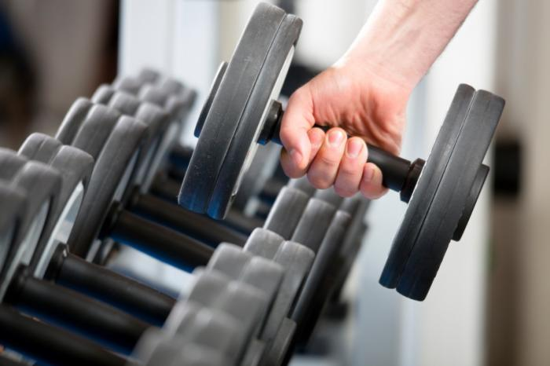
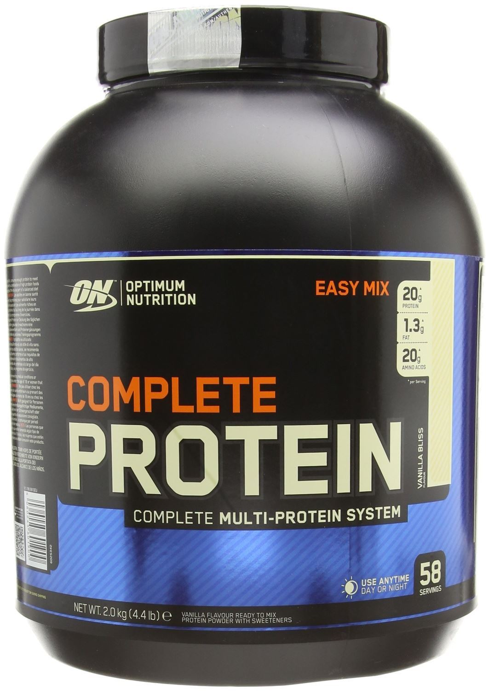

RAST MIŠIĆA
Rast mišića
Bodybuilderi koriste tri glavne strategije za maksimiziranje mišićne hipertrofije:
-Trening snage kroz utege ili elastični / hidraulički otpor.
-Specijalizirana prehrana koja uključuje dodatne proteine i dodatke kad je to potrebno.
-Odgovarajući odmor, uključujući spavanje i oporavak između treninga.
Bodybuilderi često skraćuju ova tri koraka u poznati moto "jesti čisto, trenirati i spavati dobro".
Trening s utezima
Intenzivni trening s utezima uzrokuje mikro-suze mišića koji se treniraju; ovo je općenito poznato kao mikrotrauma. Te mikro-suze u mišićima pridonose osjetljivosti nakon vježbanja, koja se naziva odgođena pojava mišićne boli (DOMS). To je popravak tih mikro-trauma koji rezultira rastom mišića. Normalno, ova bolnost postaje najvidljivija dan ili dva nakon treninga. Međutim, kako se mišići prilagođavaju vježbama, bol se smanjuje.
Trening s utezima ima za cilj izgradnju mišića poticanjem dva različita tipa hipertrofije: sarkoplazmičnim i miofibrilarnim.Sarkoplazmična hipertrofija dovodi do većih mišića, a bodybuilderi više vole nego hipertrofija miofibrila, koja gradi sportsku snagu. Sarkoplazmična hipertrofija potaknuta je povećanim ponavljanjem, dok je hipertrofija miofibrila potaknuta podizanjem težine.
U oba slučaja, povećava se i veličina i snaga mišića (u usporedbi s onim što se događa ako ta ista osoba uopće ne podiže težinu), međutim, naglasak je različit. Mnogi polaznici vole kružiti između dvije metode kako bi spriječili tijelo da se prilagodi (održavajući progresivno preopterećenje), možda naglašavajući bilo koju metodu koja više odgovara njihovim ciljevima.
Tipično, bodybuilder će većinu vremena biti usmjeren na sarkoplazmičnu hipertrofiju, ali se može privremeno promijeniti u hipertrofiju miofibrila kako bi se prošao pored platoa. Međutim, nisu pruženi nikakvi stvarni dokazi koji bi pokazali da polaznici ikada stignu do ove visoravni, a radije je više bila hiper stvorena iz "mišićne konfuzije".
Prehrana
Visoke razine rasta mišića i popravaka koje postižu bodybuilderi zahtijevaju specijaliziranu prehranu. Općenito govoreći, bodybuilderima je potrebno više kalorija od prosječne osobe iste težine kako bi se osigurale potrebe za proteinima i energijom koje su potrebne za potporu njihovom treningu i povećanje mišićne mase.
U pripremi natjecanja, sub-održavanje razine energije hrane u kombinaciji s kardiovaskularnim vježbe izgubiti tijelo mast. Proteini, ugljikohidrati i masti su tri glavna makronutrijenata koja ljudskom tijelu trebaju za izgradnju mišića.bOmjeri kalorija iz ugljikohidrata, proteina i masti mogu razlikovati ovisno o ciljevima bodibilder.
Ugljikohidrati
Ugljikohidrati igraju važnu ulogu za bodybuildere. Oni daju tjelesnoj energiji da se nosi s rigorima treninga i oporavka. Ugljikohidrati također potiču izlučivanje inzulina, hormona koji omogućuje stanicama da dobiju potrebnu glukozu. Inzulin također nosi aminokiseline u stanice i potiče sintezu proteina. Inzulin ima učinke slične steroidima u smislu povećanja mišića. Nemoguće je promicanje sintezu proteina bez postojanja inzulina, što znači da ne uzimanja ugljikohidrata ili protein-koji inducira oslobađanje inzulina-nemoguće je dodavanje mišićne mase.
Bodybuilderi traže polisaharide s niskim glikemijom i drugim polagano probavljivim ugljikohidratima, koji oslobađaju energiju na stabilniji način od šećera i škroba s visokim glikemijskim učinkom. To je važno jer ugljikohidrati s visokim glikemijom uzrokuju oštar odgovor na inzulin, što tijelo stavlja u stanje u kojem je vjerojatno da će dodatnu energiju pohraniti kao masnoću. Međutim, bodybuilderi često gutaju šećere koji se brzo probavljaju (često u obliku čiste dekstroze ili maltodekstrina) neposredno prije, tijekom i / ili nakon treninga. To može pomoći u nadopunjavanju glikogena pohranjenog u mišićima i stimuliranju sinteze mišićnih proteina.
Proteini
Motorni proteini aktin i miozin stvaraju sile koje djeluju na mišiće. Trenutne preporuke sugeriraju da bi bodybuilderi trebali konzumirati 25-30% proteina po ukupnom unosu kalorija kako bi poboljšali svoj cilj održavanja i poboljšanja sastava tijela. To je naširoko raspravljalo tema, a mnogi tvrde da je 1 gram proteina po kilogramu tjelesne težine dnevno je idealno, neki sugerira da je manje dovoljno, dok drugi preporučuju 1,5, 2, ili više. Smatra se da protein treba konzumirati često tijekom dana, posebice tijekom / nakon treninga i prije spavanja.
Tu je i neka rasprava o najboljoj vrsti proteina koju treba uzeti. Piletina, puretina, govedina, svinjetina, riba, jaja i mliječni proizvodi su bogati proteinima, kao i neki orašasti plodovi, sjemenke, grah i leća. Kazein ili surutka se često koriste kao dodatak prehrani dodatnim proteinima.
Protein sirutke je vrsta proteina koji se nalazi u mnogim popularnim markama proteinskih dodataka i preferiraju ga mnogi bodybuilderi zbog svoje visoke biološke vrijednosti (BV) i brzih apsorpcija.Protein sirutke također ima veći učinak od kazeina na razinu inzulina, što uzrokuje dvostruku količinu oslobađanja inzulina. Ovaj učinak je nešto izbjegnuta kombiniranjem kazein i sirutka, Bodybuilderi se obično smatraju da zahtijevaju protein s višim BV od soje, što se dodatno izbjegava zbog svojih estrogenih svojstava. Ipak, neki stručnjaci za prehranu vjeruju da se soja, laneno sjeme i mnoge druge biljke koje sadrže slabe spojeve slične estrogenu ili fitoestrogene mogu korisno koristiti, jer se fitoestrogeni natječu s estrogenima za receptorska mjesta u muškom tijelu i mogu blokirati njegovo djelovanje.
To također može uključivati određenu inhibiciju funkcija hipofize, dok stimulira P450 sustav (sustav koji eliminira hormone, lijekove i metabolički otpadni proizvod iz tijela) u jetri kako bi aktivnije obradio i izlučio višak estrogena. Kortizol smanjuje unos aminokiseline u mišićima i inhibira sintezu proteina.
Obroci
Bodybuilderi često dijele unos hrane za jedan dan u 5 do 7 obroka približno jednakog nutritivnog sadržaja i pokušavaju jesti u redovitim intervalima (npr. Svakih 2 do 3 sata). Ova metoda može poslužiti u dvije svrhe: ograničiti pretjerano zatvaranje u fazi rezanja i fizički omogućiti potrošnju velikih količina hrane tijekom faze punjenja. Suprotno uvriježenom mišljenju, češće jelo ne povećava bazalni metabolizam u usporedbi s tradicionalnim 3 obroka dnevno. Iako hrana ima metabolički trošak za probavljanje, apsorbiranje i pohranjivanje, naziva se termički učinak hrane, ovisi o količini i vrsti hrane, a ne o tome kako se hrana raširi na obroke tijekom dana.
Dobro kontrolirane studije korištenjem kalorimetrije cijelog tijela i dvostruko označene vodesu pokazali da nema metaboličke prednosti za češću prehranu. Važna uloga prehrane u izgradnji mišića i gubitku masti znači da bodybuilderi mogu konzumirati širok raspon dodataka prehrani. Različiti proizvodi koriste se u pokušaju povećanja veličine mišića, povećanja stope gubitka masnoće, poboljšanja zdravlja zglobova, povećanja prirodne proizvodnje testosterona, poboljšanja učinka obuke i sprečavanja potencijalnih nedostataka hranjivih tvari.
Literatura:
https://en.wikipedia.org/wiki/Bodybuilding